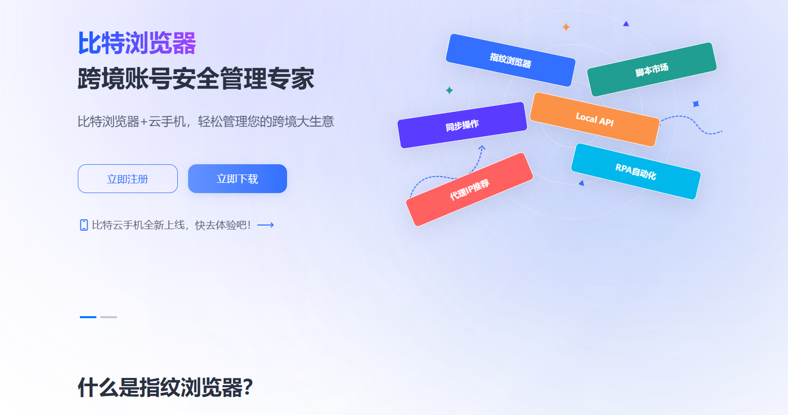

比特浏览器 — 为速度与隐私而生
极致页面加载速度、内置去追踪与广告拦截、多平台同步。让浏览既快速又安心。
支持 Windows / Mac / Linux / Android / iOS · 多语言 · 开放扩展生态
100k+ 用户
获得行业最佳评分
比特浏览器

轻量 · 安全 · 可扩展
核心功能
极速引擎
经过调优的渲染与缓存策略，让页面加载更快、滚动更流畅。
隐私保护
内置跟踪拦截、指纹保护与匿名模式，默认阻止第三方追踪器。
内置广告拦截
开箱即用的广告拦截减少噪音并提升页面可读性。
跨设备同步
书签、标签页与扩展可在你的设备间安全同步。
扩展生态
兼容主流扩展市场，支持开发者发布插件。
低资源占用
对内存与 CPU 进行了深度优化，特别适合轻薄设备。
或直接扫描下方二维码在手机上下载（请替换为真实渠道二维码）
安装包校验：SHA256: --replace--
隐私与安全
最小数据收集
只收集保证服务与同步所必需的最少数据，默认匿名化处理。
开源审计
核心组件开源，接受第三方安全审计，审计报告将公开发布。
端到端同步（可选）
同步功能默认不上传明文数据，支持用户自己托管同步服务器。
常见问题
比特浏览器与主流浏览器有什么不同？
比特浏览器专注于轻量与隐私保护，默认阻止第三方追踪并内置性能优化。
我可以在移动设备上同步书签吗？
可以，支持跨设备加密同步，用户可选择使用我们云端或自托管服务。